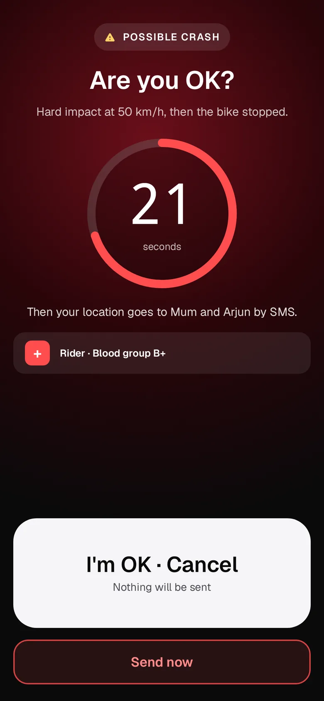

Every ride, kept.
Keppo Moto turns the phone on a motorcycle's handlebar into a riding crew: it records every ride and lean angle, films the good bits by itself, texts your people if you crash, steers around Delhi traffic and turns your clips and your own words into Reels. 12 systems, 30+ screens, works offline, and in beta with 4 riders. I designed it end to end and shipped it in two months, with AI as my engineering team.
- 01Lean from a phone.
In a steady turn the accelerometer says the bike is upright. The gyroscope is corrected with the physics of a turn instead, and the mount is learned while riding.
- 02A pothole isn't a crash.
A crash is a sequence: a hard impact or a 60° slide while riding, then the bike stays down. 30 s to say I'm OK, then an SMS that works without internet.
- 03Evidence before rules.
243 false starts in one ride made the voice-filming rules stricter. Test builds log every slice of sound so new rules are replayed on real rides first.
- 04Cost and safety as design inputs.
Free on-phone work first, a ₹1.3 route request last, no paid server. Nothing behind a tap, no voice, no vibration. Safety is never behind the paywall.

